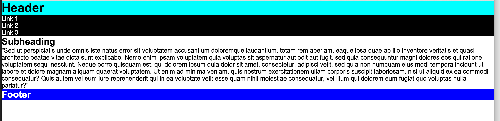
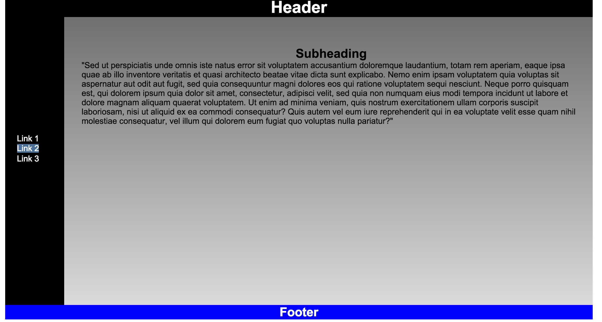

Session 5 Semantic HTML Task
Task 1 - Using Semantic HTML
The purpose of this task is to understand semantic HTML elements and also gain a greater understanding of using floats to lay out a HTML page.
Set up
- Download the task from here
- Extract it inside your
internet_techfolder - The resulting folder will be called
session6 - Open
index.htmlwithin your favourite text editor and make sure you understand how the semantic HTML elements are laid out - It should currently look like the below image in your browser:

- Open up the
css/main.cssfile and follow the steps in/* .. */comments - These steps will guide you through the style sheet implementation. If done correctly your page should roughly resemble the below image
- If it does not look like the image below, make the necessary tweaks to your CSS

Tip
Remember we use margin: 0 auto to align a block level element to the centre.
Task 2 - Horizontal Navigation Bar
Add a horizontal navigation bar to the <header> section of your page. Remember to use a <ul> list to group together the <a> elements.
Task 3 - Links
Add some pseudo classes to the links. We covered how to do this in <<
Task 4 - More CSS3 (Optional)
You should have already used the CSS3 properties border and radius at this point. This task requires you to implement at least 2 further CSS3 properties into your page.
You'll need to:
- Learn about the different types of CSS3 rules Here is a great resource
- Pick out some properties that interest you
- Implement them into your webpage
Task 5 - Validate Your HTML Code
Ensure your HTML code is valid using the W3C Validator. Don't forget to keep this habit up!